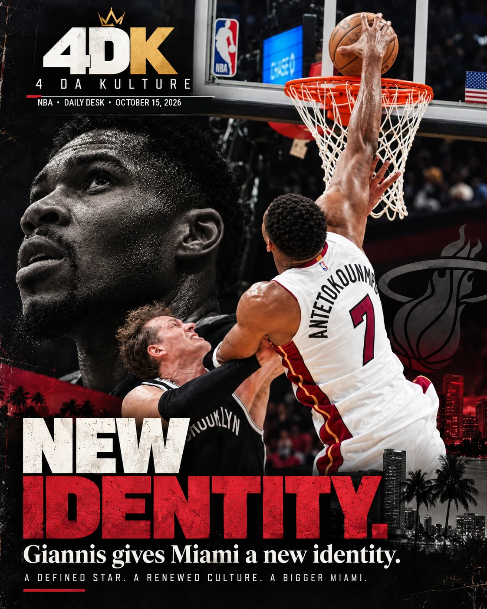
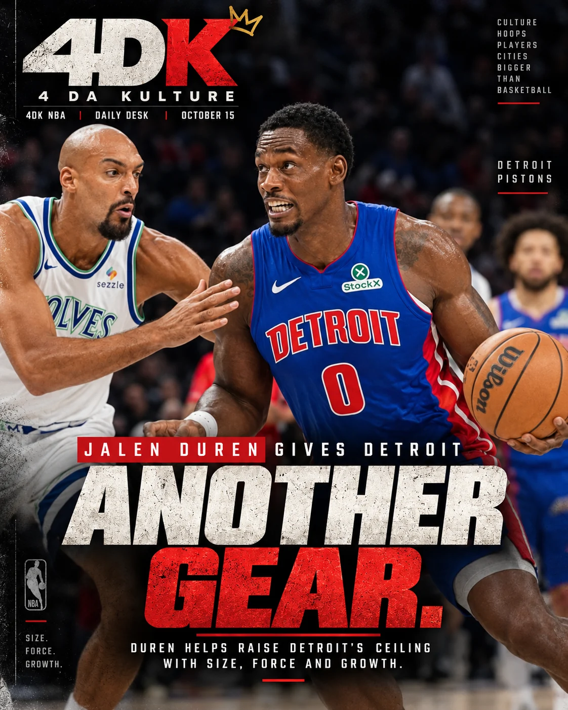
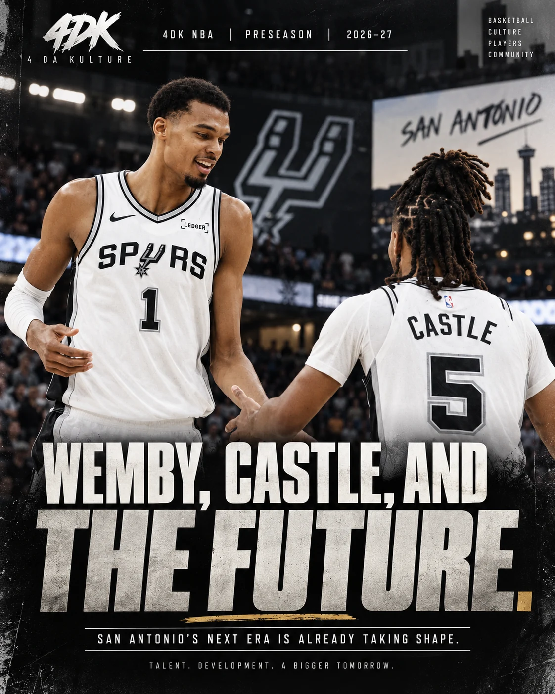

GIANNIS RUNS MIAMI.
DUREN MAKES NOISE.
Seven verified preseason finals. All the context. We separate the impressive performances from what really matters when the regular season begins.
SEVEN FINALS. SEVEN CONVERSATIONS.
Wednesday was a reminder that the NBA preseason is for evaluation, not declaring champions. The scoreboard gave us seven completed games to dissect, including the late Denver–Clippers finish. What mattered most was how stars looked in new settings, how coaches used the time, and which younger players made cases for actual responsibility when the games start counting.
We don't grade an October performance like a playoff game. But we won't dismiss the evidence, either. Giannis showed how a game can revolve around him without his team having to manufacture every basket. Detroit displayed the inside-out partnership we've been watching with Cade and Duren. And Chicago's young pieces offered something more encouraging than the final margin: identifiable roles.
Our lead takeaway: the best preseason performances don't just produce points. They reveal who can carry responsibility when the rotation gets serious.
GIANNIS CHANGES THE GEOMETRY
Miami scores 144, but the more important question is how its offense looks around him.

Twenty points, fifteen rebounds, nine assists and three blocks in roughly twenty-three minutes. There is a reason we begin here. Miami beat Brooklyn 144–128 without Bam Adebayo, and Giannis Antetokounmpo gave us a pretty clear demonstration of how a single superstar can change the shots everybody else gets.
A Giannis possession isn't limited to a drive or a post-up. The threat of that drive pulls the back line inward. Once defenders commit, somebody is open in the corner, on the cut or running behind the defense. He doesn't have to score thirty for the opposing team to feel thirty points of pressure. In this game, the rebounding and passing were every bit as impressive as the scoring.
The Nets made their runs, and Michael Porter Jr. supplied twenty-seven points. Rookie Mikel Brown Jr. added fifteen in fourteen minutes in his return from an ankle issue. Those are real positives for Brooklyn's development file. But allowing Miami sixty-two paint points to Brooklyn's thirty-eight is a reminder that scoring talent alone cannot compensate for a defense that never builds a wall.
The 4DK question moving forward isn't whether Giannis makes Miami dangerous. Of course he does. It's whether this roster builds a reliable half-court answer when opponents take away the first drive, and how the pieces fit once Bam returns. Miami's ceiling demands more than one spectacular preseason box score.
DUREN MAKES HIS CASE
Detroit's center didn't need thirty minutes to put Minnesota in trouble.

Jalen Duren scored twenty-four points in just over fifteen minutes and made eight of his nine shots. The number pops off the page, but what we liked even more was the variety of ways he got there: powerful finishes, rolling into space and an assertive approach to the rim. Detroit beat Minnesota 128–106 after the Timberwolves had a fast start.
Cade Cunningham finished with fourteen points and nine assists. On certain possessions, Detroit let Ausar Thompson advance the ball and initiate rather than requiring Cade to manufacture everything. That's important. A contender needs more than one way to begin an offensive possession. Making Ausar a better connective piece can free Cade to attack as a finisher and take some of the load off him in the middle of games.
But we've made this point before at 4DK: Duren's value can't be measured only by a nice double-double on a good team. Detroit needs him to be a genuine second offensive force when defenses tighten in March and April. The touch, power and decisiveness in this outing move the evaluation in the right direction. They don't complete it.
Anthony Edwards had twenty points for Minnesota, but Detroit's physical defense and sixty-four to thirty advantage in paint scoring were the real dividing lines. For a Minnesota squad integrating new pieces such as Jonathan Kuminga, the question is whether the spacing and ball-handling hold when another team takes away the easy paths to the rim.
TATUM ISN’T WAITING FOR THE REGULAR SEASON
Boston's defense is making its case, one possession at a time.

Jayson Tatum gave Boston nineteen points, eight rebounds and six assists in a 114–93 win over Charlotte. Derrick White scored nineteen, and Payton Pritchard piled up eleven assists with no turnovers. Those are three encouraging pieces of a larger story: Boston looks comfortable making the extra pass while still getting into the opponent's ball-handlers.
Charlotte turned the ball over thirty times. Boston committed just eleven. The Celtics had sixteen steals and scored fifty-six points in the paint to Charlotte's twenty. That's a lot more revealing than the margin by itself. Pressure creates possessions, and possessions create baskets. A team that can build offense out of its defense does not need an elite isolation look every trip down the floor.
The arrival of Paul George and Mitchell Robinson gives the Celtics different combinations to explore around Tatum, White and Pritchard. We see why the ceiling is high, but the real test will be how those groups defend and close against postseason-level offenses, not just a turnover-heavy preseason opponent.
There were bright spots for the Hornets: Brandon Miller and Tidjane Salaün scored sixteen apiece. Still, a team trying to establish a new identity cannot keep handing opponents extra opportunities. Charlotte's defensive effort and its ability to protect the ball have to grow together.
SAN ANTONIO IS EXPERIMENTING WITH A BIGGER FUTURE
Wemby is the constant. The Fox–Castle–Harper balance is the variable.

The Spurs beat Phoenix 123–103, and Victor Wembanyama needed only twenty-three minutes for nineteen points and four blocks. When Wemby looks like that, the opposing shot chart starts changing before he even leaves his feet. Drivers see him behind the first line and rethink the finish.
San Antonio also got eighteen from Stephon Castle and sixteen from Carter Bryant off the bench. The bigger experiment was putting De'Aaron Fox, Castle and Dylan Harper on the floor together. There were awkward moments early. That's not a reason to abandon a potentially versatile guard combination. It's a reason to keep giving them reps until spacing, hierarchy and timing become instinctive.
Where we remain cautious is the difference between having three talented guards and having a complete playoff offense. Who controls the ball late? Who spaces when Wemby posts? Who guards the hardest perimeter assignment without compromising the glass? Those answers determine whether San Antonio is merely exciting or genuinely dangerous.
Phoenix was missing Devin Booker and several other regulars, making the outcome a limited measuring stick. Ryan Dunn still showed value with fifteen points without a miss. The Suns also had an injury concern after Luke Kennard left with a sore left knee; a timetable had not been established at the time of this report. The Spurs won the rebounding battle fifty to thirty-six, another positive indicator that deserves a tougher test.
CHICAGO HAS TO MAKE DEVELOPMENT VISIBLE
Buzelis is building a case; Caleb's reps matter more than an October percentage.
Chicago beat Milwaukee 125–104 behind nineteen points from Matas Buzelis, including five made threes in seven attempts. Caleb Wilson added ten points, four rebounds and three assists in twenty-four minutes, while Josh Giddey handed out nine assists. We can appreciate the score, but the long-term significance is in those three names sharing the same picture.
Giddey already has the instincts to run an offense. His job is to organize people and turn pace into good decisions. Buzelis has to prove he can become a dependable scoring threat, not just a high-upside prospect who flashes every third night. And with Caleb, we're watching how his handle, decision-making and defensive responsibility evolve while the team gives him the runway a premium young prospect deserves.
We've said it before: no need to rush Caleb into the finished-product conversation. The tools are there. What matters is whether Chicago gives him work that actually teaches him how to win. He won't get that only from highlight dunks. He gets it from positioning, reading help defenders, defending without fouling and executing after the opponent has adjusted.
Milwaukee committed thirty turnovers. That overwhelmed any clean evaluation of its half-court attack, especially with several established players sitting. Kam Jones scored twenty-three, and rookies Brayden Burries and Kasparas Jakučionis provided sparks, but this was not a night to pretend the Bucks had their full team on the floor.
FEARS SETS THE TONE, DALLAS SEARCHES FOR SHOT CREATION
New Orleans held on; the Mavericks' spacing never settled.
New Orleans beat Dallas 101–97 after controlling most of the night and surviving a late Mavericks comeback. Jeremiah Fears scored sixteen points with five assists, while Derik Queen contributed eleven rebounds. The Pelicans' rotations still need sorting, but this was a useful glimpse at the urgency their young guards can bring when they are trusted to attack.
The Pelicans gave Fears meaningful responsibility beside Bennedict Mathurin, and the pairing is worth monitoring. Fears has the confidence to set a tempo. Mathurin can pressure the defense as a scorer. Those are useful starting points for a group that must build a reliable structure around its young pieces rather than simply waiting for the next big roster move.
Dallas played without Cooper Flagg and Kyrie Irving, so this was a different offense than the one Dusty May wants opening week. Still, ten makes in forty-nine three-point attempts is not something we wave away. Naji Marshall and P.J. Washington were asked to create while the wings struggled to find rhythm. Zaccharie Risacher went three-for-eleven and missed all seven threes.
The encouraging Dallas side came from two reserves. Tobi Lawal produced sixteen points through cuts and hard attacks; Sergio de Larrea had ten points and six assists, though he also turned it over four times. Neither fixes every problem, but both gave Dallas purposeful movement on a night when its half-court flow stalled.
This is exactly why preseason matters in a different way. When the stars sit, coaches learn which supporting players can create a productive possession without being spoon-fed one.
CLIPPERS FINISH STRONG; DENVER TESTS ITS DEPTH
LA turned a slow start into a 122–110 win, and both teams found meaningful rotation answers.
The Clippers beat Denver 122–110 in the night's final game. Denver looked sharper in the opening moments, but Los Angeles settled down, found good looks from its bench and built the edge it needed with a 38-point third quarter. The Clippers made fifteen of thirty-three threes while Denver made eleven of thirty-three; assists also favored the home side thirty-five to twenty-nine.
Darius Garland delivered fourteen points and seven assists, and Rui Hachimura scored sixteen. The more interesting rotation story might be the willingness of the Clippers' young players to handle the ball and execute within structure. Keaton Wagler scored twelve points, made three threes and grabbed five rebounds; Baba Miller added fifteen and five from the bench. A preseason finale isn't a coronation, but we saw a team that did not need every established scorer available to create purposeful possessions.
Denver's starters were on a managed workload. Nikola Jokić had five points, six rebounds and seven assists in fewer than seventeen minutes; Jamal Murray posted fourteen points in the first half. Trevon Brazile was the brightest individual scoring development, producing twenty-two points off just ten attempts. That is useful depth evidence for a group built around the Jokić–Murray axis.
The concern is Julian Strawther, who left in the third quarter with a left-knee injury and did not return. No recovery timetable is included without confirmation. Our 4DK takeaway: Denver shouldn't worry about a preseason loss with limited starter minutes, but it does need quality wing depth and health when the games turn real. For the Clippers, the second-unit chemistry and Garland-led creation are encouraging signs that deserve a tougher evaluation in the regular season.
WHAT WE’RE WATCHING NEXT
Performance is a clue. The season decides whether the clue meant something.
Our top three basketball developments from Wednesday: Giannis already controls the shape of Miami's offense; Duren is giving Detroit an increasingly credible second offensive weapon; and Boston's defense may set up its scorers better than any isolated preseason shooting percentage can tell us. The Clippers also deserve credit for overcoming an early deficit and finding useful contributions from Garland, Wagler and their reserves.
We're also keeping the Spurs' three-guard balance under a microscope and watching how Chicago develops Caleb Wilson without rushing the story. Those are season-long evaluations, not one-night verdicts.
Thursday shifts the focus to Toronto at New York and Oklahoma City at Houston. The Knicks want to show the kind of poise we expect from a defending champion. OKC enters as the 4DK preseason No. 1, but the Rockets give us another look at the physicality and depth questions every title hopeful must answer. The final week of preseason is about clarity: rotations, health, roles and trust.
MORE FROM 4DK
Our rankings, player evaluations and nightly takes are a running conversation. As the season changes, we update the newest file without erasing the previous one.